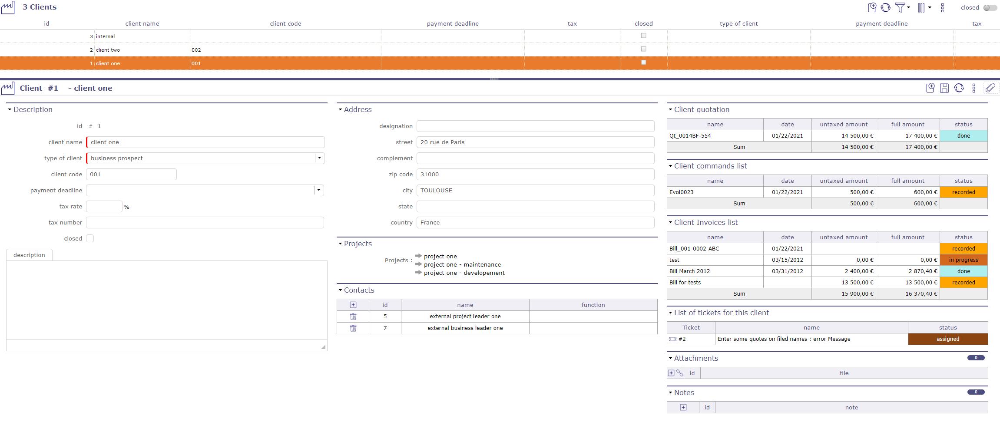
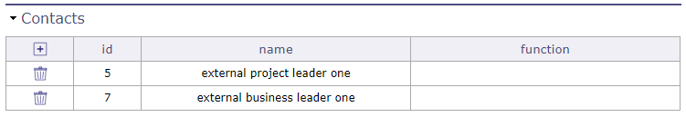
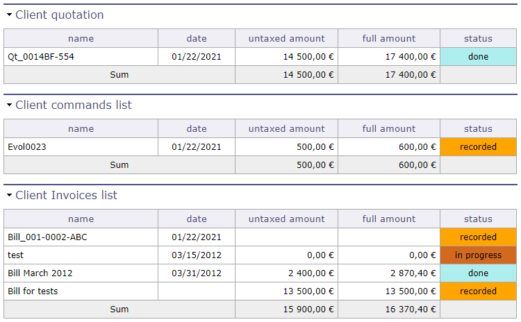
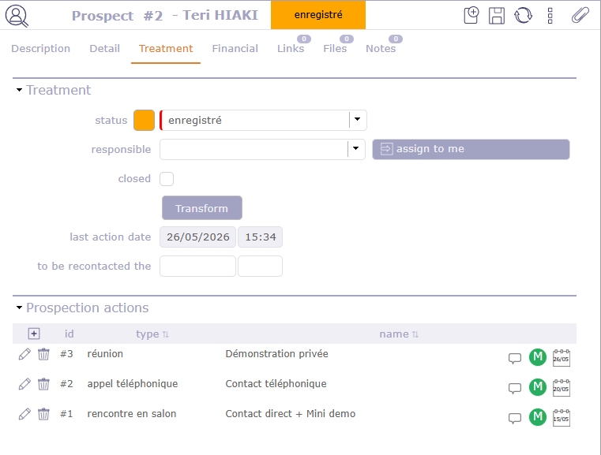
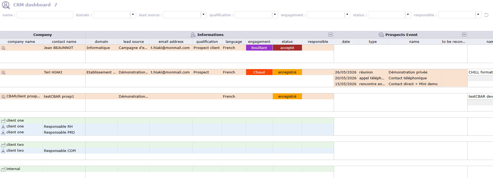
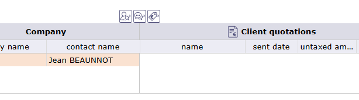

Clients¶
The client is the entity for which the project is set.
It is generally the owner of the project, and in many cases it is the payer.
It can be an internal entity within the same enterprise, a different enterprise, or an entity of an enterprise.
The client defined here is not a person. Real persons within a client entity are called “contacts”.

Clients screen¶
Section Description
Field |
Description |
|---|---|
Unique Id for the client. |
|
client name |
Short name of the client. |
Type of client |
Type of client. |
Client code |
Code of the client. |
Payment deadline |
The payment deadline is stated on the bill for this client. |
Tax |
Tax rates that are applied to bill amounts for this client. |
Tax number |
Tax reference number, to be displayed on the bill. |
Flag to indicate that the client is archived. |
|
Complete description of the client. |
{kind=link}
Address section
Full address of the client.
Projects section
List of projects related to the client.
Contacts section
Displays the names of client-related contacts.

Contacts section¶
You can create contacts directly from the Contact screen.
You can also create contacts directly from the Contacts section.
Click on
 to create a contact
to create a contactClick on
 to delete a contact
to delete a contact
When you want to add a contact, a window displaying the existing contacts is opened.
You can select an existing contact or create a new one from this window. The information will be reflected directly in the Contact screen.
Client quotation, client commands list and client bill list
These sections provide a summary of the various financial documents concerning the selected client.
The quotations, orders and invoices associated with the client are displayed in tables for easy reading.

Financial monitoring sections¶
Note
To display these sections, you must set the options “list quotes, commands and bills on client form” on yes in the global parameters but also in the user parameters.
See: Global Parameters See: Users Parameters
List of tickets
This section allows you to see all open tickets for the selected client.

List of tickets for this client¶
Note
To display this section, you must set the option “Display tickets at client level” to Yes in both the global parameters and the user parameters.
See also
Customer relationship management¶
The ProjeQtOr CRM (Customer Relationship Management) module enables you to centralize and track all information and activities related to sales prospecting, from the identification of a prospect to their conversion into a contact or client.
It allows you to manage prospects and their characteristics, record prospecting sources, events and actions, and associate financial information such as quotations and invoices.
A consolidated CRM dashboard brings together this information to provide an overview of sales activity and prospect development.
Prospecting sources and events provide the context for prospect acquisition, while prospecting actions allow you to track the interactions that take place throughout the sales process.
Together, these elements provide a complete view of prospect development.
The Prospects¶
Record all the prospects you wish to track here.
Numerous fields are available in the Description and Details sections to provide the information needed to qualify and follow up on your prospects.
The prospect record allows you to store information such as the prospect type, business domain, language, title, position, function, level of engagement and whether the person is a decision-maker.
You can also associate prospecting sources, prospecting events and prospecting actions with the prospect.
In the Lead Processing section, the Convert button allows you to convert a prospect into a client and a contact.
The prospect’s company information is used to create the client, while the prospect’s personal information is used to create the contact.
Possible duplicate prospect
This section allows you to identify another prospect that may correspond to the same company or person, helping to avoid duplicate records.
Types of prospect
Prospect types allow you to categorize prospects based on their profile or nature.
This classification facilitates their identification and segmentation, as well as the analysis of sales activity.
For example, you can distinguish between a private company, a government agency, a public body, an association, a consulting firm, and a potential partner.
Domains / Positions and decision makers
These reference data allow you to describe and qualify your prospects.
You can define their business domain, position, title, function and level of engagement, and indicate whether they are decision-makers.
This information can then be used to segment prospects and filter CRM data.
Prospect financial information
Financial information related to prospects can also be tracked, including prospect estimates.
Once a prospect has been converted into a client, the associated client quotations, orders and invoices can be tracked from the client record.
The prospect events¶
Prospecting actions are recorded directly on the relevant prospect’s screen.
They allow you to record and track all interactions with a prospect.
They provide a record of communications and sales activities, maintaining a complete history of interactions with each prospect.

Prospection Actions¶
For each action, specify in particular:
The date of the action;
The type of action performed: phone call, email, meeting, demonstration, follow-up, event participation, etc.;
The description of the action
The action history makes it possible to view the steps already taken, avoid unnecessary follow-ups, and quickly identify which actions need to be carried out.
This information is also reflected in the CRM dashboard, providing a consolidated view of prospecting activity.
The Lead events¶
The lead events allow you to group and identify events or campaigns that generate prospecting activities.
These may include trade shows, webinars, conferences, marketing campaigns or business events.
They allow you to track the prospects generated by a specific event and measure its commercial impact.
The Lead sources¶
Prospecting sources allow you to identify where prospects come from and the channels through which they were acquired.
Examples include a website, word of mouth, trade shows, email campaigns, social media, or direct sales activities.
They enable you to measure the effectiveness of various prospecting channels and identify those that generate the most business opportunities.
CRM Dashboard¶
A consolidated CRM dashboard brings all this information together in a single view: prospects, contacts, customers, prospecting activities, and financial data.
It provides a comprehensive overview of sales activity, making it easier to track opportunities and their progress.

CRM Dashboard¶
Click to close the corresponding column.
{kind=link}
Click the icon to reopen the column.
 Prospect informations
Prospect informations Prospect Estimates
Prospect Estimates Client orders
Client orders
{kind=link}
{kind=link}
{kind=link}
Once the columns are reduced, the icons automatically reposition themselves in the designated location.

Each line and piece of information is clickable and takes you to the dedicated screen.
When all columns are open and your screen width does not allow them to be displayed simultaneously, a horizontal scrollbar enables you to access the data on the right side of the page.
The “Company” column, however, remains visible at all times, regardless of how you scroll horizontally across the page.
Several filters are available to help you isolate the information you need based on name, domain, prospecting source, prospect qualification, engagements, status, or assigned representative.
A color code distinguishes prospects from clients and contacts.